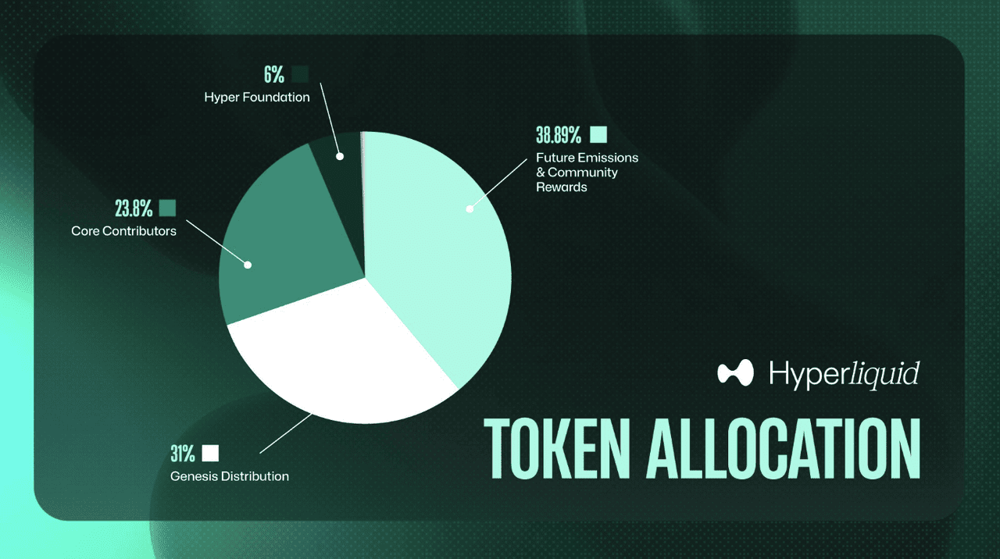

L'Airdrop qui a Créé
des Millionnaires
Novembre 2024. Hyperliquid distribue le plus gros airdrop de l'histoire de la crypto. Et la saison 2 est en cours.
Le 29 novembre 2024, Hyperliquid a lancé son token $HYPE avec un airdrop massif : 310 millions de tokens distribués gratuitement aux utilisateurs de la plateforme. Au prix de lancement, certains wallets ont reçu l'équivalent de dizaines, centaines de milliers de dollars, ou même, pour les meilleurs utilisateurs, des millions.
Ce n'était pas de la chance. C'était le résultat d'une stratégie simple : être actif sur la bonne plateforme, au bon moment.
Hyperliquid n'a distribué que 31% de son supply lors de la saison 1. Une saison 2 est confirmée, avec potentiellement encore plus de tokens à distribuer. C'est maintenant qu'il faut se positionner.

Qu'est-ce que Hyperliquid ?
Hyperliquid est un exchange décentralisé (DEX) de contrats perpétuels — c'est-à-dire une plateforme qui permet de trader des cryptos avec effet de levier, directement depuis ton wallet, sans intermédiaire centralisé.
Contrairement aux exchanges classiques comme Binance ou Bybit, tes fonds restent sous ton contrôle. Pas de KYC, pas de vérification d'identité. Tu connectes ton wallet, tu déposes, et tu trades.
Pourquoi Hyperliquid est différent ?
Hyperliquid a construit sa propre blockchain (un L1) spécialement optimisée pour le trading. Le résultat :
Exécution des ordres en moins d'une seconde. Aussi fluide qu'un exchange centralisé.
Pas de gas fees pour trader. Les frais de trading sont parmi les plus bas du marché.
Des milliards de dollars de volume quotidien. Hyperliquid rivalise avec les plus gros exchanges centralisés.
Pas besoin de faire confiance à un tiers. Tu gardes le contrôle total de tes actifs.
Les HIPs — Hype Improvement Proposals
Hyperliquid évolue à travers des HIPs (Hype Improvement Proposals), des mises à jour majeures qui étendent les capacités de la plateforme. C'est ce qui rend l'écosystème de plus en plus complet — et attractif.
Standard de Token Natif
HIP-1 définit le standard pour déployer des tokens natifs sur la blockchain Hyperliquid — l'équivalent de l'ERC-20 sur Ethereum. Les tokens sont des actifs de premier rang, intégrés directement au carnet d'ordres on-chain. Le déploiement passe par un système d'enchères hollandaises pour le ticker du token, ce qui évite le squattage de noms.
Hyperliquidity
HIP-2 résout le problème de liquidité au lancement. Il fournit un market-making automatisé au niveau du protocole pour chaque token HIP-1. Concrètement, c'est comme un AMM (type Uniswap), mais la liquidité s'exprime sous forme d'ordres limites sur le carnet d'ordres. Résultat : chaque nouveau token est immédiatement tradeable avec des spreads raisonnables.
Perpetuels Permissionless
HIP-3 permet à des builders tiers de déployer leurs propres marchés de contrats perpétuels sur Hyperliquid, sans dépendre des validateurs pour lister de nouveaux marchés. Les déployeurs stakent du HYPE, opèrent leur propre DEX perps avec des carnets d'ordres indépendants, et gagnent 50% des frais de trading. C'est ce qui transforme Hyperliquid en plateforme de plateformes. Et surtout, HIP-3 ouvre la porte au trading d'actions et de stocks tokenisés — il serait possible de trader des perps sur Apple, Tesla ou le S&P 500 directement sur Hyperliquid, sans intermédiaire.
Marchés de Prédiction & Options
HIP-4 introduit les contrats à résultat : marchés de prédiction (sport, élections, données économiques) et produits similaires aux options, directement sur Hyperliquid. Pense à Polymarket, mais intégré nativement dans Hyperliquid — entièrement collatéralisé, sans liquidation, avec settlement en USDH. Les builders peuvent créer leurs propres marchés en stakant du HYPE et toucher 50% des frais.
Pourquoi on croit au potentiel ?
Hyperliquid n'est pas un simple DEX. L'équipe est en train de construire un écosystème complet avec HyperEVM — une machine virtuelle qui permet de déployer des applications DeFi directement sur la blockchain Hyperliquid.
Concrètement, ça veut dire que Hyperliquid passe d'une simple plateforme de trading à un véritable écosystème blockchain avec du lending, du staking, des stablecoins natifs, et bien plus. L'upside potentiel est considérable.
Le token $HYPE a déjà une market cap de plusieurs milliards. Mais comparé à des plateformes similaires qui sont valorisées bien plus haut, le potentiel de croissance reste énorme — surtout pour ceux qui accumulent des points pour la saison 2.
Comment Farmer l'Airdrop
La saison 2 de Hyperliquid récompense les utilisateurs via un système de points. Plus tu génères de volume et d'activité sur la plateforme, plus tu accumules de points, et plus ton allocation sera importante lors de la prochaine distribution.
Ce qui rapporte des points
Volume de Trading
C'est le facteur principal. Chaque trade que tu fais génère du volume. Plus ton volume cumulé est élevé, plus tu gagnes de points. Tu n'as pas besoin de gagner tes trades — c'est le volume qui compte.
HyperEVM / DeFi
Interagir avec l'écosystème HyperEVM : fournir de la liquidité, utiliser les protocoles DeFi natifs, staker. Ça diversifie ton activité et montre que tu es un utilisateur complet.
Régularité
Être actif régulièrement vaut mieux qu'un gros volume en une seule journée. La constance est récompensée. Quelques trades par semaine sur plusieurs mois > un marathon de trades en un jour.
La stratégie recommandée
Ouvre et ferme des positions rapidement sur des paires liquides (BTC, ETH). L'objectif n'est pas de prédire le marché mais de générer de l'activité. Utilise un faible levier (2-3x) pour minimiser les risques.
Reviens sur la plateforme plusieurs fois par semaine. Même quelques trades suffisent — l'important c'est la constance.
Utilise les protocoles DeFi qui se déploient sur HyperEVM. Bridge, swap, fournis de la liquidité. Diversifie ton empreinte on-chain.
Trade[XYZ] est un HIP-3 construit sur Hyperliquid. Chaque transaction compte pour les deux plateformes en même temps. Trade des actions, le S&P 500 et plus encore.
Voir le guide Trade[XYZ] →Rappel important : On n'est pas là pour trader et gagner de l'argent avec le trading. On utilise la plateforme pour accumuler des points. Garde des positions courtes, avec un faible levier, et ne risque jamais plus que ce que tu peux te permettre de perdre.
S'Exposer à Hyperliquid
Préparer ton wallet
Si ce n'est pas déjà fait, installe MetaMask ou Rabby Wallet (recommandé pour sa simplicité). Assure-toi d'avoir de l'ETH sur le réseau Arbitrum — c'est par là que tu vas déposer sur Hyperliquid.
Astuce : Tu peux acheter de l'ETH sur Binance ou Coinbase, puis le retirer directement sur le réseau Arbitrum pour économiser les frais.
Se connecter à Hyperliquid
Rends-toi sur app.hyperliquid.xyz. Connecte ton wallet en cliquant sur "Connect". Hyperliquid va te demander de signer un message — c'est juste pour vérifier que tu es bien le propriétaire du wallet, ça ne coûte rien.
Déposer des fonds
Clique sur "Deposit" et envoie tes USDC depuis Arbitrum vers Hyperliquid. Le dépôt minimum est faible — tu peux commencer avec 50-100 USDC pour te familiariser.
Astuce : Si tu as de l'ETH sur Arbitrum, tu peux le swap contre de l'USDC directement sur un DEX comme Uniswap avant de déposer.
Faire tes premiers trades
Va dans l'onglet "Trade". Sélectionne une paire liquide comme BTC-USD ou ETH-USD. Ouvre une position avec un faible levier (2-3x) et une petite taille. Ferme-la après quelques minutes.
Répète cette opération plusieurs fois. L'objectif est de générer du volume, pas de faire des profits sur chaque trade.
Explorer HyperEVM
Bridge une partie de tes fonds vers HyperEVM via le bridge intégré. Explore les protocoles DeFi disponibles : swap de tokens, fourniture de liquidité, staking. Chaque interaction diversifie ton profil d'utilisateur.
Maintenir une activité régulière
Reviens 2 à 3 fois par semaine pour effectuer quelques trades. La régularité est un critère clé pour les airdrops. Un utilisateur constant sur plusieurs mois sera toujours mieux récompensé qu'un utilisateur qui fait tout en un jour.
- Effectuer 3-5 trades sur le DEX perps
- Interagir avec au moins 1 protocole sur HyperEVM
- Vérifier ton accumulation de points